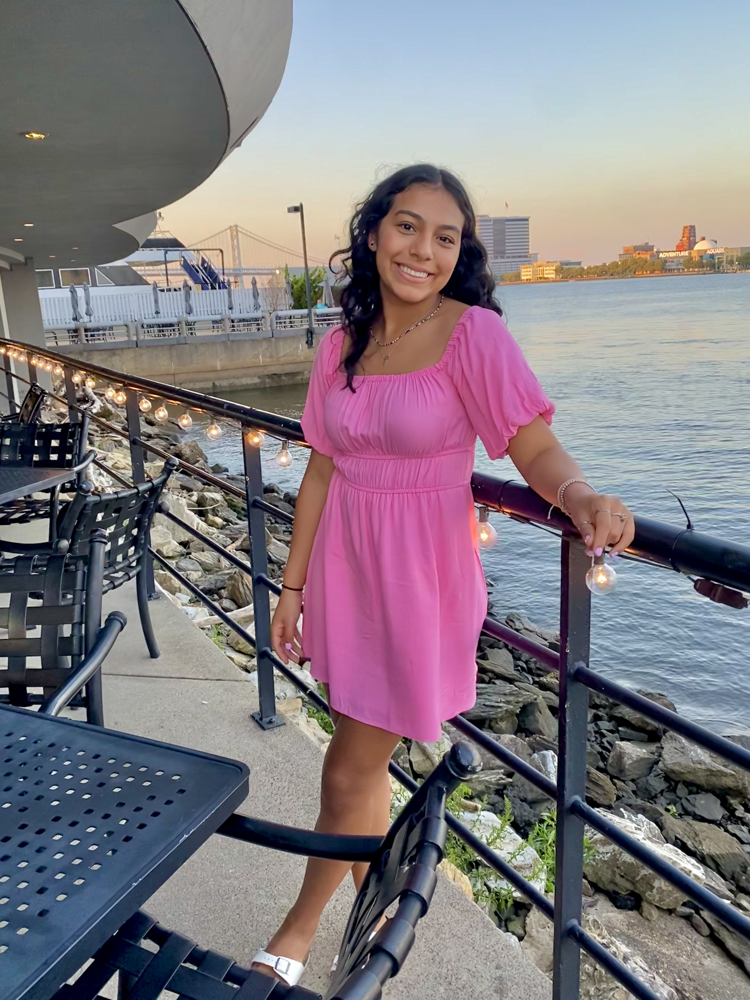

Miranda Mojica

Summary
Hello! My name is Miranda Mojica and I am a student at the University of Chicago, graduating in June 2026. I am a Neuroscience major and Computer Science minor on the pre-med track. Some of my interests include volunteering, hiking, and maintaining a healthy lifestyle. I also enjoy working on web development projects and furthering my education.
Education
- June 2026
The University of Chicago, B.S. Neuroscience
- June 2022
Atlantic County Institute of Technology, High School Diploma
Work Experience
- Waterford Twp EMS, Emergency Medical Technician (June 2023- Present)
- Provided a high quality of care in both emergency and transportation services
- Utilized NREMT licensing and amassed over 200 hours of critical pateint care
- Taco Bell, Service Trainer (October 2020-September 2022)
- Maintained a high quality of service within a fast-paced working environment
- Trained new employees following strict corporate guidelines
- Shore Medical Center, Volunteer (December 2021-January 2022)
- Assisted a nurse's aid in maintaining a clean and organized Emergency Department
Skills
- Fluent in Spanish (Reading, Writing, Conversational)
- Conversational in American Sign Language
- Proficient in R Studio
- Proficient in Microsoft Apps (Excel, Word, Powerpoint)
- Experience in Biology and Chemistry laboratories
Certifications
- CPR/ BLS Certified with American Red Cross
- NREMT National Certification
- NJEMS Certification